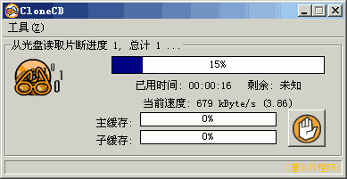

光盘刻录基础教程
作者：TeliuTe 来源：基础教程网
光盘里面存有数据，可以把它完整制作成一个文件，称为映像或镜像文件，下面我们来看一个练习；
1、映像文件
1）标准映像文件是 ISO 格式，扩展名是 .iso，图标是一个光盘，文件一般较大；
2）刻录软件也有自己的映像文件格式，CloneCD 的格式是 .ccd，Nero 的格式是 .nrg；
2、制作映像
1）启动克隆ccd，在主窗口点第一个按钮，创建映像；
2）接下来显示了光驱的各个信息，放入要复制的光盘，然后点“下一步”继续；
3）根据光盘的类型选择一项，数据光盘选 Data CD，然后点“下一步”继续；
4）接下来的保存位置对话框里，点“浏览”按钮，选择保存的文件夹，保存到一个空文件夹中，文件名也修改一下；
5）点“确定”按钮开始制作，等待完成后光盘自动弹出，并播放一段音乐提示；

6）取出光盘关好托盘，到文件夹中就可以看到三个文件，这些就是制作好的映像文件，
映像文件可以用虚拟光驱打开，虚拟光驱程序可以打开虚拟光盘映像文件，就像使用真正的光驱和光盘一样；
本节学习了制作映像文件(虚拟光盘)的基本方法，如果你成功地完成了练习，请继续学习下一课内容；
本教程由86团学校TeliuTe制作|著作权所有
基础教程网：http://teliute.org/
美丽的校园……
转载和引用本站内容，请保留版权信息和本站链接。